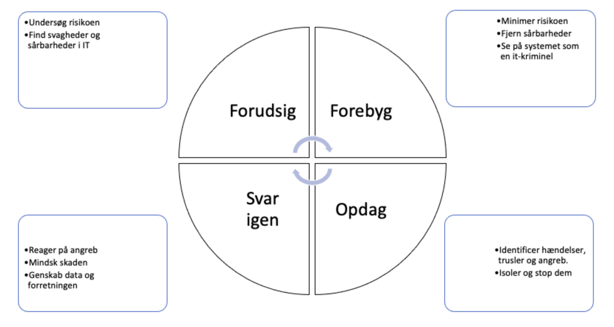

1. PERSONLIG Sikkerhed og START-TEST
Keens video-kursus om IT-sikkerhed
- Hold din maskine og programmer opdaterede
- Ikke klikke på mystiske links (hverken i mails eller sociale medier)
- Pas godt på dit NEM-ID
- Tjek "Om virksomheden" og URL'en, før du handler....
- Tjek sikkerhedscertifikatet....
- Lav sikkerhedskopier af vigtige data....
- Brug altid 2-faktor geodkendelse
- Gå ikke på ubeskyttede, frie WIFI-netværk - eller brug VPN, hvis du gør
- Vær opmærksom.....
2. CASE: Maersk og NOTPETEYA
- Hvad handler casen om? Hvem angriber hvem, med hvilke mdler og hvorfor?
- Hvorfor lykkedes angrebet og hvad gør man?
- Hvad er konsekvensen?
- Hvordan kan man sikre sig fremover?
2. CIA-MODELLEN - om INFORMATIONSSIKKERHED
CIA-modellen handler om informationssikkerhed

- Confidentaility / Konfidentialitet
- Integrity/ / Integritet
- Accesibility / Adgang
3 kerne-begreber i it-sikkerhed er confidentiality, integrity og avaliability.
Confidentiality betyder fortrolighed. Dine data skal naturligvis være hemmelige og det skal sikres at uvedkommende ikke kan få adgang. Integritet betyder, at data er korrekte og fuldstændige. Availability betyder, at de rette brugere kan få adgang til data, når de måtte ønske det.
Eksempel: Virksomheden Metallinox udvikler intelligent software til at styre svejsemaskiner. Planerne for næste version af software skal > naturligvis behandles meget hemmeligt (=fortroligt) for at konkurrerende virksomheder ikke får dem. Det er også vigtigt, at integriteten > af planerne er høj, det kan ikke nytte noget, at man ikke gemmer hele systemet, men kun nogle af planerne. Endeligt skal de rigtige personer kunne får adgang til planerne, chefen og designerne, men ikke virksomhedens kantine-personale.
3-2-1 BACKUP-strategi
Alle vigtige dokumenter bør man have en kopi af, dvs. en backup/sikkerhedskopi af. Man skal have mindst 3 kopier, på mindst 2 forskellige medier og mindst 1 af dem uden for egen bopæl.
Opgave
- Hvilke vigtige dokumenter har I?
- hvordan beskyttes de?
- Forklar, hvorfor 3-2-1 strategien er vigtig for disse dokumenter
3. HACKER-typer og trusselstyper
Morfar forklarer: Ikke alle hacker er ....
Trusselstyper
- Malware og vira
- Trojanske heste
- Ransomware
- DDOS-angreb
- Phishng og smishing
Opgave
- Forklar forskellen mellem white-hat hacker, black-hat hacker, grey-hat hacker og script kiddie
- Forklar hvad er de ovenstående trusselstyper
4. TÆNK SOM EN HACKER
Lær simpel hacking. Prøv første gratis modul her.
5. RISIKO-STYRING
Som virksomhed eller organisation, skal man ikke 'bare installere et antivirus-program' og tro alt er godt og sikkert, men man skal generelt styre virksomhedens risiko (dvs. minimere det). Dette værktøj kan være en måde at systematisere dette. 
OPGAVE: Diskuter med sidemanden. Hvor starter vi i modellen? Hvad betyder faserne? Prøv at forestille jer, at I er DETTE GYMNASIUM'S sikkerhedansvarlige. Prøv at gå modellen igennem og skriv nogle punkter ned om hver fase. Hvad vil i gøre, hvordan vil i håndtere de forskellige ting.
6. RISIKO-ANALYSE

Virksomheder er nødt til at analysere deres risici. Hvilke trusler står vi overfor nu og i fremtiden? Hvem truer os? Hvilke teknologier råder de over? Hvorfor truer de os?
TRUSSELS- HÅNDTERING
Når vi har analyseret truslerne, kan vi arbrejd med, hvordan vi håndterer truslerne før, under og efter et angreb.

7. IT-SIKKERHEDSPLAN / UDDANNELSESPLAN
8. Opsummering, afsluttende opgave
- Identificer trusler
- Analyser trusler
- Udarbejds sikkerhedsplan
- (continuert uddannelse af brugerne)
Plan for risikostyring
- Forudsigelse af sikkerhedsbrud
- Forebyggelse af sikkerhedsbrud
- Monitorering af sikkerhedsbrud
- Håndtering af sikkerhedsbrud
Ekstra. IOT og IT-sikkerhed
opgaver
- Hvad betyder IOT?
- Er der specielle forhold omkring IOT og IT-sikkerhed, som vi skal vi opmærksommme på og i givet fald, hvilke og hvorfor?
- Giv eksempler på IOT
- Den internet-forbundne PACEMAKER: Hvilke sikkerhedsrisici ser I?